Let's face it, the Kindle For Mac app is horrible. It's not optimized for retina displays, and hasn't been for over a year, making it essentially useless on my retina macbook pro. Also, you cannot copy and paste from it. However, like many people, I own a kindle, and so that's what I'm stuck with.
iBooks for Mac on the other hand, is a much better reading experience, and it supports copy and
paste.
So today's mission is to get books from the Kindle for Mac app into iBooks through Calibre. The following workflow is not as automated as I'd like it to be, but it's good enough for now:
We locate the folder that the Kindle For Mac app uses to store downloaded books.
We use Automator to automatically copy those books into another folder.*
We setup Calibre to automatically add the books from the copied folder and convert them to ePubs.
We drag the files from Calibre into iBooks (this is the manual labour).
*The reason for step 2 -- copying the books into another folder with automator -- is that Calibre deletes items from the source folder after it automatically adds them to the Calibre library. The reason for this behaviour is outlined here.
You can easily go to this folder by pressing Command+Shift+G in the Finder, then copying and pasting the above path into the textfield and pressing 'Go'.
You should see a bunch of .azw and .apnx files. These are your kindle books.
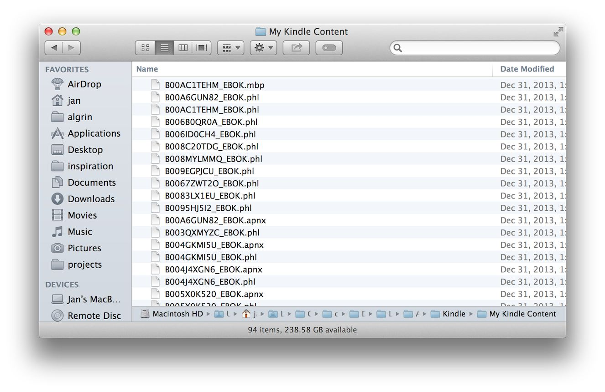
Step 2: Setup Automator to Automatically Copy the Kindle Books
This is really easy. Some other tutorials use a third-party app for this, but automator is perfect for the job.
Open Automator.
Select ' Folder Action'.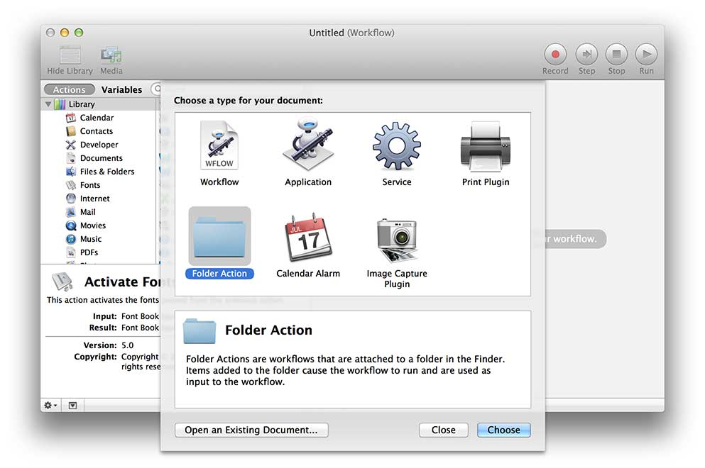
Where it says 'Choose folder', select the folder with the Kindle books. Again, an easy way to go the this folder is Command+Shift+G 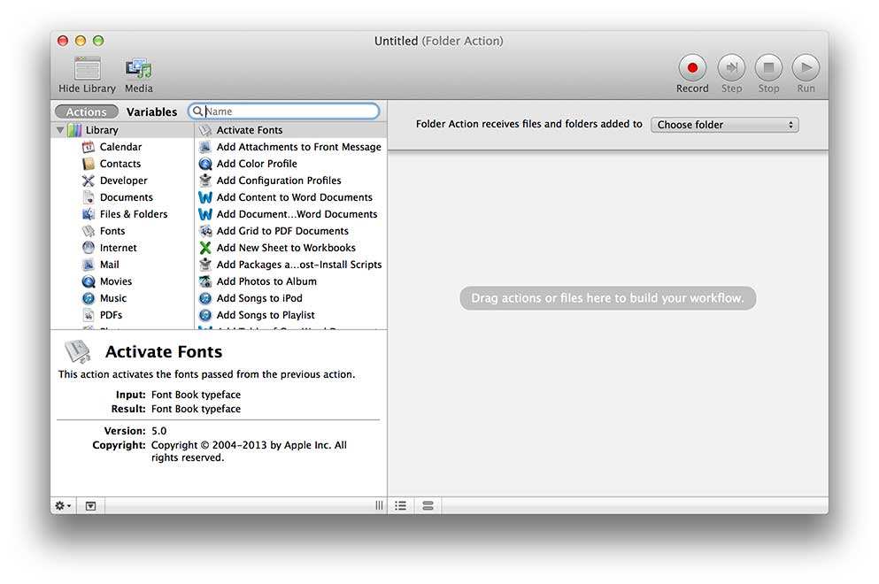
Select 'Copy Finder Items' as the folder action. You can set the destination folder to whatever and wherever you want. Mine is called 'Kindle 4 Mac Items' and is located in my Documents folder.
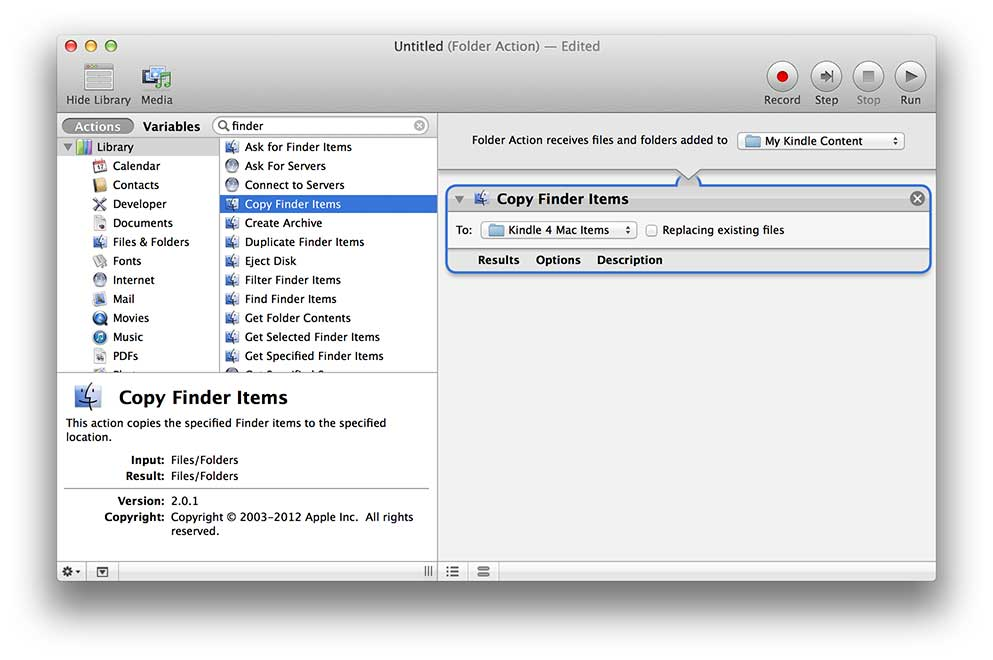
There we go. Now, whenever you double click on a book in the Kindle for Mac app, the app downloads the book into the Kindle content folder, and Automator automatically copies the book into a different folder.
Step 3: Calibre, Taming the Beast
First, download Calibre. Then clean up the cruddy Calibre interface a bit.
Bad
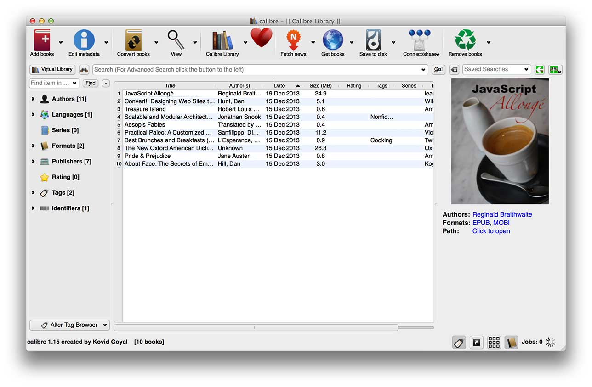
Less bad
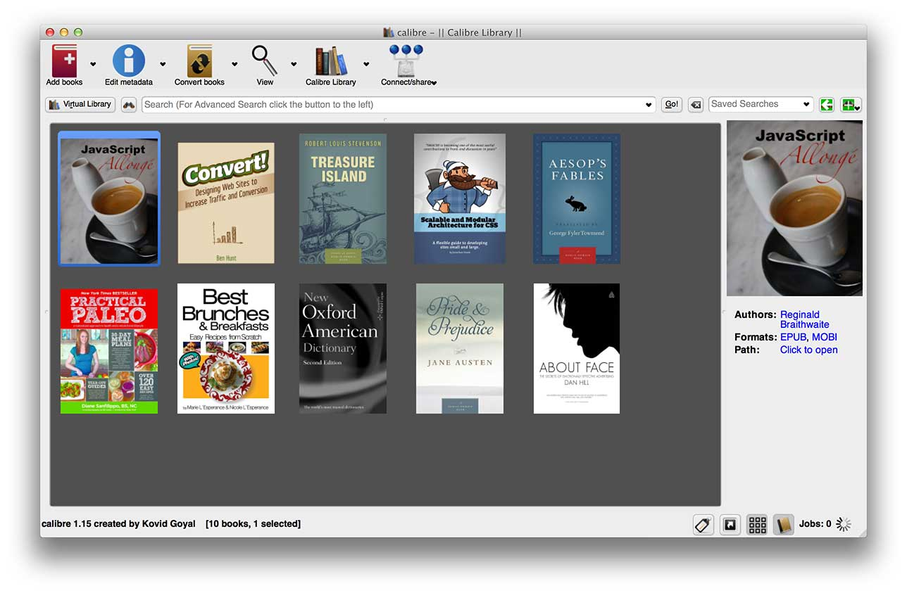
Follow the steps in the gallery below to go from bad to less bad.
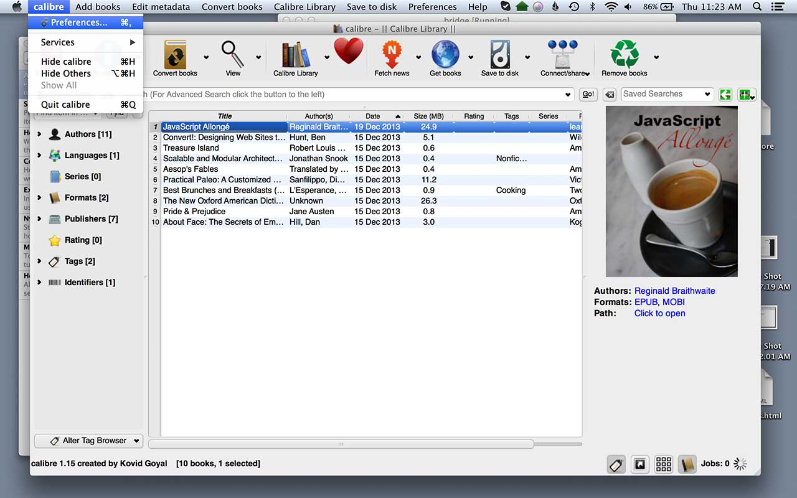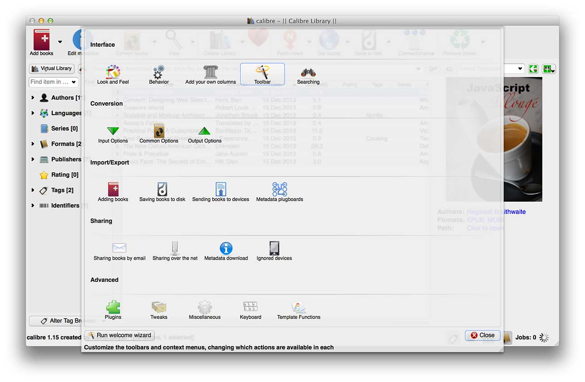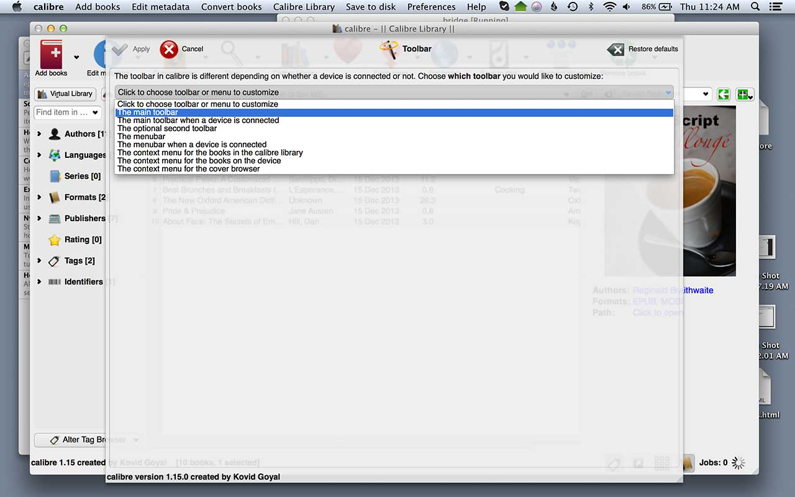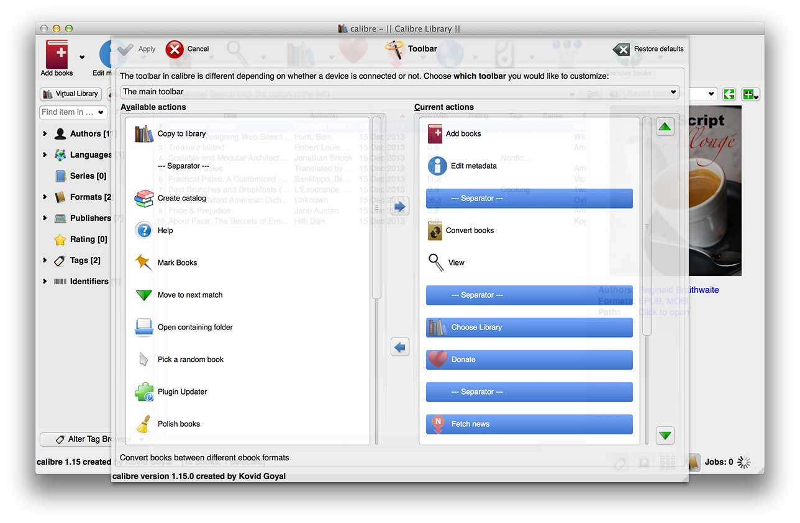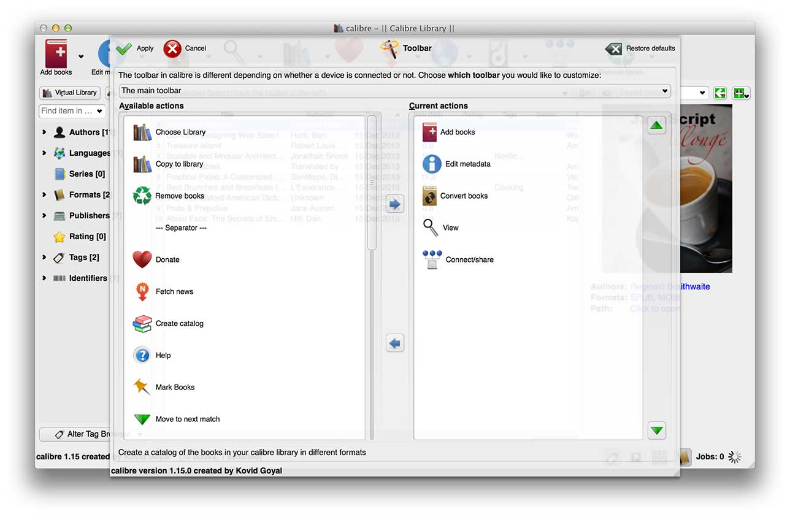
Step 4: DeDRMing Kindle books with Calibre
Now we get down to business. Download the DeDRM plugin for Calibre and follow the instructions to get it installed. The plugin will automatically strip DRM from Kindle books when they are added to Calibre.
Step 5: Automatically adding books into Calibre
First we need to set the preferred output format in Calibre, then we need to set up the automatic adding.
To set the preferred output format. From the top menu, we go to:
Calibre → Preferences → Behavior
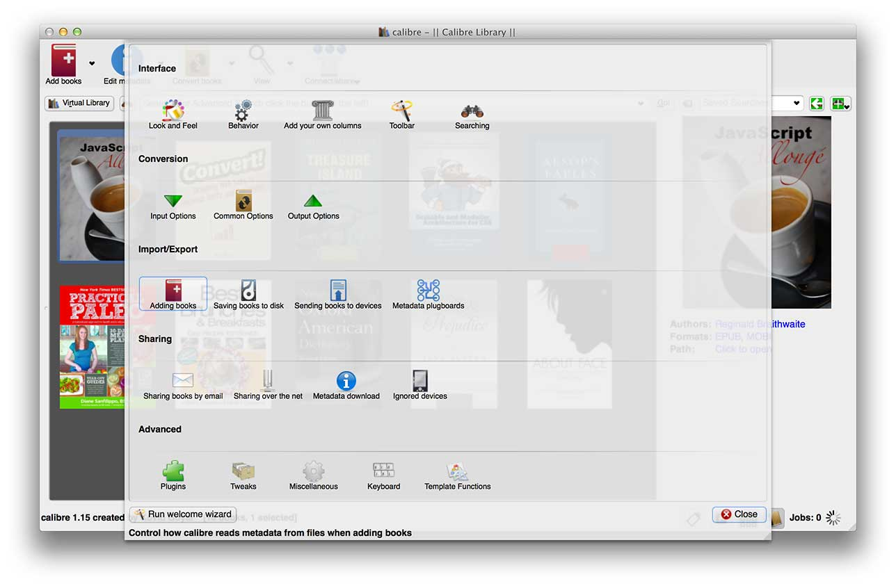
And there we select EPUB as the preferred output format.
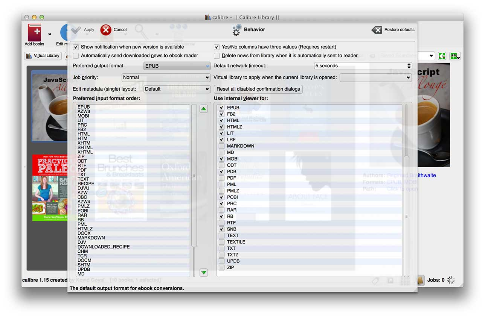
Now for the automatic adding. From the top menu, we go to:
From here, we select the folder that we copied the kindle books into with Automator. My folder is named "Kindle 4 Mac Items". It's important that 'automatically convert added files to the current output format' is checked. We click apply.
Now after we hit apply, Calibre will automatically add the kindle books, strip the DRM off them, and convert them to ePubs. Not bad.
Step 6: Getting from Calibre to iBooks
Unfortunately, I was unable to get the books from Calibre to iBooks automatically, so I just drag them into iBooks from Calibre. There's a thread on this topic here, but that workflow didn't worked for me, so I'm sticking to dragging for now.
But hey, the books convert nicely from Kindle to ePub, along with images and table of contents and all that jazz.